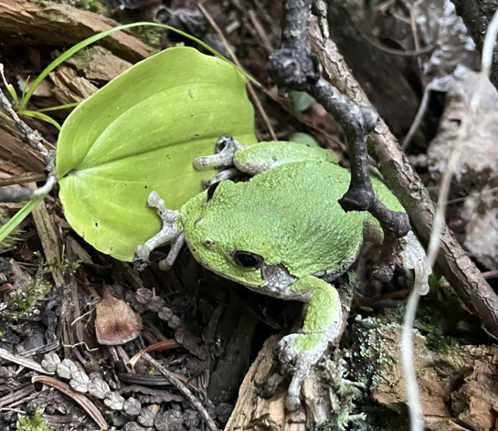

What is this device?
This small device is known as an autonomous recording unit, or ARU. Fancy name for a sound recorder that turns on at pre-programmed times each evening. We have dozens of these set up in forested areas across the region as part of our ecological research. We are studying gray treefrogs to understand how their geographical range is changing in response to climate change. By setting up many ARUS across the frog's range edge, we can monitor year after year whether they are expanding northwards. We are also studying how temperature affects calling behaviour, which is why you can see the white/foil plastic box near the ARU. This shields a temperature logger from the sun so that we can get accurate air temperaturesato study temperature cues of calling behaviour.
Please do not disturb!
Please do not disturb the ARUs or the temperature logger. We leave these in place throughout the spring and summer, returning regularly to download the data. We will be back to collect them at the end of the summer. If the sun shield or ARU looks damaged, please email me at the address below and let me know the ARU number (or the GPS coordinates). Thanks very much!
Why gray treefrogs?
Gray treefrogs are found all the way from southern Texas, USA, to Red Lake, northwest of Thunder Bay. This is a huge geographical range and the treefrogs here in Thunder Bay experience very different climate, forest, predators, prey, and competitors than further south. Our research is discovering how this species has evolved to survive and thrive in such a wide range of environments, especially in the harsh conditions around Thunder Bay. These discoveries will help us build models that can predict how these species will respond to future climate change, especially whether they will expand their range northward.
Can I help?
I am not currently able to take on volunteers for this summer, but there are other ways to help out. One of the best ways is to get involved in Community Science initiatives. Community Science engages members of the public in collecting data, which can then be used for scientific research. With many people contributing, we can gather far more data than is possible for ‘professional’ scientists to gather on their own. Please consider becoming a community scientist! If you observe treefrogs (or other frogs), you can enter the information on Ontario Nature’s FrogWatch website (https://www.naturewatch.ca/frogwatch/ontario/). If you are able to get a picture or a sound recording, please upload it to iNaturalist (https://inaturalist.ca). iNaturalist is especially easy – just upload a photo to the app and you can use it for all species, not just frogs. Even if you aren’t able to identify the species you have photographed, the iNaturalist community can help identify it after it is posted. Also check out their iSeek app, which identifies species using your smartphone’s camera.
Land Acknowledgement
We respectfully acknowledge that we are carrying out research on the traditional territory of the Fort William First Nation, signatory to the Robinson Superior Treaty of 1850.
Lakehead Region Conservation Authority (LRCA)
We are working with the LRCA to document and monitor the biodiversity of several conservation areas in the region. This work will not only inform our scientific research but help to understand and manage the conservation areas. For more information on the LRCA, visit their website


Dr. Adam Algar
Department of Biology
Lakehead University
aalgar@lakeheadu.ca